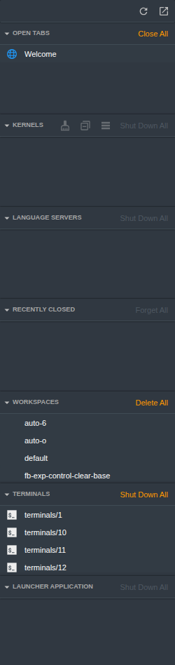

Workspace manager - design proposal
Draft for the Star Colonel's approval, 2026-10-23. No code of the panel exists yet. The functional requirements are filed as acceptance criteria in docs/acc-crit.md; the criteria that depend on an open choice are filed after the choice.
1. The panel it replaces

Screenshot of the live lab on 2026-10-23 (JupyterLab 4.6.4), taken in a scratch workspace that was deleted afterwards.
- Seven sections in one column: Open Tabs, Kernels, Language servers, Recently Closed, Workspaces, Terminals, Launcher application
- The 16 terminals of this server read
terminals/1toterminals/16; none shows the program that runs in it or when it was last used - Workspaces are a flat list of names; nothing shows which terminal or kernel belongs to which workspace
- Sidebar icon today: (a circle with a square); the extension brings its own, section 8
2. Decided by the Star Colonel
- The extension replaces the built-in panel completely ("our extension completely replaces the old one")
- Each workspace has a toggle "hidden" with an eye icon, to hide workspaces that would bother the user
- A "..." button in the section header opens the workspace's menu
- The panel has a refresh button and a filter that finds anything, the same concept as the filter of
jupyterlab_ai_code_assistants_extension - A new sidebar icon replaces the old one
- The functional requirements are written as acceptance criteria and defects through pm-tools, author
@kj - No code before the design is approved
3. Where the data comes from
The five open questions of the brief, each answered from the JupyterLab 4.6.4 source and from probes on this server.
| Question | Answer | Evidence |
|---|---|---|
| How is a terminal or a kernel assigned to a workspace? Where does one show that belongs to no workspace, or to two? |
|
16 terminals on this server: workspace default holds 5 (7, 11, 13, 14, 15), auto-6 holds 1 (1), 10 are in no workspace. The culler sibling reads the same terminal:<name> keys to protect terminals. |
| Where does the "last accessed" time of a workspace come from? |
|
Probe 2026-10-23: a workspace with its time set 2 days back was opened in a headless browser; with no click, its last_modified became the load time. Source: apputils-extension state plugin, a 500 ms debouncer around workspaces.save. The culler deletes a workspace when this same time is older than its idle timeout (7 days by default; never default), so the age is also the culler's clock. |
| Where do the last activity time and the process name of a terminal come from? |
|
The REST model of a terminal is {name, last_activity} only. Probe 2026-10-23: the foreground process of each terminal shell of this server reads claude or fish from /proc. Source: terminal/src/widget.ts, onTitleChange sets title.label. |
| How are the tabs of a workspace that is not the current one read and closed? |
|
Saved layout of default on 2026-10-23: main.dock.widgets = terminal:14, terminal:11, terminal:13, terminal:15, terminal:7, each with a data entry {"name": "<n>"}. The built-in Workspaces section reads the tab count the same way. |
| Replace the built-in panel or add a panel? |
|
Source of running-extension 4.6.4: the sidebar is its own plugin, restorer.add(running, 'running-sessions'); jupyterlab_server reads disabledExtensions from an extension's package.json (config.py, lines 170 to 173). |
4. Three alternatives
The same content in each: workspace default open (this window's workspace, sky), four other workspaces closed, the section "In no workspace", "Other sessions", and the line for three hidden workspaces. The second section shows the hover state with the two header actions of the brief (open the workspace, close all its tabs). Names and terminals are the real ones of this server; the purposes and the documents are examples.
A. Accordion with a colour strip recommended
{{svg:alt-a}}- Each section is a full-width band; a 4px strip in the workspace colour runs down the left edge of the header and, when open, of the whole section
- Header: caret, name, a "current" chip on this window's workspace, the age, the "..." button; the second line holds the purpose and the counts of documents, terminals and kernels
- Inside: three groups, Tabs, Terminals, Kernels, in 24px rows; a terminal row reads process name, then terminal name, then the time since its last activity
- Strength: closest to the brief and to the design system's sections; densest of the three, about 18 rows visible at 1000px height
- Weakness: with many workspaces the closed headers take the height; the hidden toggle is the answer
B. Tinted cards
{{svg:alt-b}}- Each workspace is a card with an 8px margin; the header is tinted with the workspace colour, the open card also has a border in that colour
- No group headings inside the card; thin lines separate documents, terminals and kernels, and the card ends with its action buttons
- Strength: the most visibly separated workspaces, and the action is a labelled button, not only an icon
- Weakness: about 25% less content per height than A; the tints need checking in every theme
C. Colour rail
{{svg:alt-c}}- A 44px rail on the left holds one coloured tab per workspace (initials of the name); the selected tab opens that workspace in the pane on the right, so exactly one is open by construction
- The pane shows name, purpose, age, counts, two labelled buttons and the three groups
- Strength: many workspaces fit without scrolling; the colour is placed on the side, as the brief describes the strip
- Weakness: names show only in the open pane and in tooltips; two-letter initials repeat (
fb-exp-*givesFEthree times on this server)
5. Behaviour common to every alternative
Panel header
- Title "WORKSPACES" and the number of workspaces shown
- Three 24px buttons, in this order: filter (shows or hides the filter field), show hidden (eye; shows the hidden workspaces), refresh
- Refresh reloads workspaces, terminals, sessions and process names; its icon turns for at least 500 ms and the button is disabled until the requests return
- While the panel is visible it reloads by itself every 10 s, without the turning icon
Filter
{{svg:state-filter}}- As in the AI assistants panel: the filter button shows a field under the header; hiding the field clears the filter; a clear button sits inside the field
- The match is the AI panel's: case, accents and separators (
- _ . /and spaces) are ignored, then a substring match with a 5% edit tolerance for queries of 10 or more characters - Searched: workspace name, purpose, tab names and paths, process names, terminal names and tab titles, kernel names and their notebooks
- Only rows that match are shown, and a workspace without a match is not shown; its header counts read "N of M"
- Proposed: while a filter is active, every section with a match is open, and the accordion state returns when the filter is cleared (open choice 2)
Workspace menu
{{svg:state-menu}}- Items: Open workspace, Open in new browser tab, Close all tabs, Set purpose..., Colour (the six colours), Hide workspace, Delete workspace
- Delete workspace is the design system's two-step action: the first click arms "Confirm delete", the second click deletes; it never runs on this window's workspace
- Close all tabs asks once when the workspace holds terminals, because the culler may then shut those terminals down after its idle time
Hidden workspaces
{{svg:state-hidden}}- Hide workspace removes the section from the panel; the line under the last section reads "N hidden workspaces"
- The eye button in the header shows the hidden workspaces among the others, name in italics, with an eye button that shows the workspace again
- The terminals and kernels of a hidden workspace are not moved to "In no workspace"; they stay hidden with it
- This window's workspace is never hidden (open choice 8)
Rules of the sections
- Exactly one section is open; opening a section closes the open one; a click on the header of the open section leaves it open (open choice 9)
- At load the section of this window's workspace is open
- Order: this window's workspace first, then the others by age, newest first; then "In no workspace", then "Other sessions"
- Each tab is listed once: documents and other widgets under Tabs, terminal tabs under Terminals, the kernels of notebook and console tabs under Kernels (open choice 4)
- A row click opens the item: a document or terminal of this window's workspace is activated; one of another workspace opens that workspace
- Ages use the design system's labels:
now,Nm,Nh,Nd, withnowunder 60 s in the brand colour
6. Workspace colours
{{svg:palette}}- Six colours in the order of
jupyterlab_colourful_tab_extension: rose, peach, lemon, mint, sky, lavender - A new workspace takes the next colour after the last one given; the colour is stored, so deleting a workspace does not move the colours of the others; the menu changes it
- Light theme: the colourful tab's active shades (
#e39fb1rose ...#bfa9dalavender). Dark theme: its light pastels (#e8bbc6rose ...#cfc1e1lavender). The colourful tab's own dark shades are tab backgrounds (#28394dsky) and almost disappear as a 4px strip on a dark panel (#303841) - The palette is the one place where the extension defines colour values, as the colourful tab extension does; everything else is a
--jp-*token (open choice 6)
7. Working with the culler sibling
- The age shown is the culler's own clock (
last_modified), so a workspace near its idle timeout reads as old in the panel - Purpose, colour and hidden state are not written into the workspace file: a write there would reset the culler's clock and would race with a window that has the workspace open. They live in the extension's own file beside the workspaces (open choice 5)
- Close all tabs on another workspace removes its
terminal:<name>keys; the culler then treats those terminals as in no workspace - A workspace, terminal or kernel the culler removes leaves the panel at the next reload; the extension drops the stored record of a deleted workspace
- The extension shuts down nothing by itself; every shutdown and every delete is a click of the user
8. Sidebar icon
{{svg:icons}}- Four candidates, drawn in one colour as the design system asks for the rail
- Recommended: 3, the accordion with one open section and its strip, because it shows what the panel is
9. Open choices for the Star Colonel
- Alternative A, B or C. Recommended: A
- Filter: open every section with a match while the filter is active, or keep one section open and show the match counts in the closed headers. Recommended: open every section with a match
- Counts in the section header. The brief reads "number of terminals workspaces and kernels in the section header". Proposed: documents, terminals and kernels in each section header, and the number of workspaces in the panel header. Confirm or correct
- Tab list: each tab once (documents under Tabs, terminal tabs under Terminals), or every tab under Tabs in tab order and the terminals and kernels again below. Recommended: each tab once
- Where purpose, colour and hidden live: the extension's own file beside the workspaces, or inside each workspace file. Recommended: own file
- Strip colours: the extension's own values above, or the colourful tab's variables where that extension is installed. Recommended: own values
- Sidebar icon 1, 2, 3 or 4. Recommended: 3
- May this window's workspace be hidden? Recommended: no
- A click on the header of the open section: leaves it open, or closes it so that no section is open. Recommended: leaves it open, as "exactly one section is open" says
10. Acceptance criteria
The behaviour above that no open choice changes is filed in docs/acc-crit.md through pm-tools as @kj: 67 criteria in 9 categories (Panel, Workspace sections, Section content, Terminal rows, Kernel rows, Hidden workspaces, Filter, Server extension, Culler sibling), 10 of them CRITICAL. Each names its test: 24 have a Jest or pytest test, 49 a Galata test. pm-tools report docs/acc-crit.md prints the status.
Filed once the choice is made: choice 2 (sections while filtering), choice 3 (the documents count and the workspaces count), choice 4 (each tab once), choice 5 (where the records live, and that hide, purpose and colour leave the workspace file's time unchanged), choice 6 (strip colour values), choice 8 (hiding this window's workspace) and choice 9 (click on the open header).